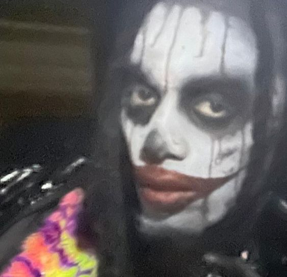
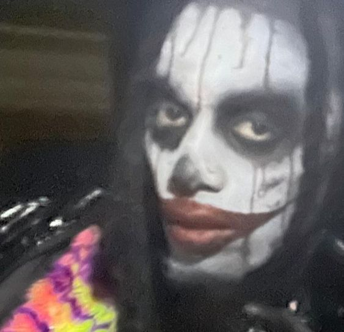

I have been waiting in the wings for my time to come. My time has come. The stage is mine and I must make the most of it. Through sheer will (ethos + passion), I must convince you, my skeptical audience, of my claim; that Playboi Carti is to modern hip hop what Michelangelo is to the Sistine Chapel. That he is to hiphop what David Bowie is to rock music.
 

I must convince you that Playboi Carti is not only an artist, but a maker of worlds; new, fantastical liminal spaces, free of cultural limitations. Playboi Carti is an iconoclast. He makes sonic images with the intent of destroying the very idea of these images. His music, considered by many to be drawl, trivial, some would even say braindead, is more concerned with expressions of feeling than literal meaning.
His music is aligned with the teachings of philosophers like Derrida, who posit that words can never refer to tangible reality. Words exist within their own word world, only referring to one another. Carti builds tangled word worlds, constructed from a mix of onomatopoeia, curse words, and slang. He deconstructs the basics of rap lyricism, in order to rebuild them in his own image, creating a symphonic galaxy that is uniquely his own: the carti-verse. His lyrics, auditorily layered and frenetic, are quite simple.
When taken out of context, they read as hood nursery rhymes:
I'ma go fuck that bitch (Yeah), I'ma go thrash that bitch (Yeah) Shawty gon' suck this dick (Yeah), shawty gon' suck this dick (Yeah) That's a pull-up bitch (Yeah), don't make me pull up, bitch I smash that thot, then pull out, bitch, might push to Flacko shit Watch me pull up, take your chain, lil' bitch I'm on Deebo lit (Yeah), I'm on 'migo lit (Yeah), I'm on kilo lit (Yeah) I go psycho, bitch, watch me sock your bitch Watch me thrash that bitch, then I pass that bitch(RIP)
There is a keen playfulness and irony conveyed through Carti’s simplistic wordplay. He invokes a Dr. Suesslike use of vivid word imagery, choosing words that sound nice together, rather than words that mAKE sense together. It would not come as a surprise to me if we were to find out that Playboi Carti has some form of synaesthesia. He seems to be very gifted when it comes to making sounds to elicit awe and euphoria in his listeners. If you don’t believe me, google videos of his concerts.
The diversity of Playboi Carti’s collaborators,from Lana del Rey to Solange Knowles, speaks also to his strengths as a sonic chameleon. The through line between all of his affiliates and collaborators is an affinity for using sound a tool for exploring and expanding the universe. African and African diaspora musicians have always understood this, being conscious of rhythm is inherent to making sense out of life’s mysteries and chaos abound. Carti has always understood this. He has access to a quasi-spiritual rhythmic connection, one that he manipulates to the listeners' delight. The world of a single Carti song is a world of disembodied space and time. Lyrics delivered in short bursts over murky beats imitate the constant flow of signals and signs to our own murky brains. Through his chaotic simplicity, there is transcendence.
I'm way too high (yeah, what?) Whoa (blatt) whoa (yeah) I'm way too high (yeah, whoa) whoa, whoa, whoa (what?) I'm way too high (yeah, whoa) whoa, whoa, whoa (what?) I'm way too high (yeah, yeah, huh?) Whoa, whoa, whoa (what?) I'm way too high (what? What? What?) (Sky)
His chaos, our own fractured, disorganized lives and the culture we have produced as a result.
The stream of conciousness lyricism of Carti unfolds in a manner not unlike the tangle of thoughts in our own seething minds. We are reading his diary or rather, he is reading it to us and we are able to see ourselves between the lines. As the popularity of reality tv and social media has shown us, we long to feel as if we have access to the “real life” of celebrities. Carti's artistry harnesses the cult of celebrity phenomenon as a means of carefully constructing his own mysterious, gothic brand of self characterization. Only Carti will set the stage for Carti. We see the world through his eyes when he reads his diary to us. We don’t understand him, we feel him. The truth is, feeling has always been the only method of understanding.
Playboi Carti’s celebrity persona is just as compelling as his music. Alongside ASAP Rocky, Carti has been responsible for bringing designers like Rick Owens back into the public eye. I believe that fashion would not look the way it does in 2023 without the influence of Playboi Carti, or more precisely, the way he seamlessly merged his own love of punk, goth, and horror with the existing hip-hop and street style aesthetics of his fanbase and peers.
Using one’s public persona as another symbol of one’s artistic sensibilities is always the sign of a true visionary, or icon rather. Other examples would include, off the top of my head, Lana del Rey, Nicki Minaj, and Azaelia Banks. With every new sonic development for Carti, there is a new aeshetic shift which follows. The release of his controversial 2020 album, Whole Lotta Red, marked a departure in both sound and style. It was not well received at first, as change so often is, but it proved to be the organic result of Carti continuing to diversify and deepen the lore of his persona. I would argue that his aesthetic and sonic shift represented the first shift towards a post mumble rap-hybrid genre. I could write a seperate essay about this.
In 2022, Carti teased the release of his own original clothing line Narcissist. His aesthetic influences range from vampires to Russian tattoo culture and everything in between.The sound of chaos and mayhem, his vision of euphoric pleasure and dark introspection, it only grows louder.
In an interview with Paper Magazine about his clothing line, Carti explained:
"I'm inspired by the world I live in, I'm inspired by the world that I created. This is the uniform for the world I created, that's the bottom line.”
His recent fashion choices, his keen understanding of what camp actually is, and his refusal to color inside the lines of a standard hip-hop artist persona, all of this has culminated in speculations surrounding his sexual identity.
His sexual preference matters very little to me, but I would agree with the speculators that Playboi Carti, the artist and the public persona, is queer. When I use the word queer, in any context, but especially in this context, I am referring to bell hooks’ definition of queer:
"not as being about who you're having sex with (that can be a dimension of it); but 'queer' as being about the self that is at odds with everything around it and that has to invent and create and find a place to speak and to thrive and to live.”
Carti has time and time again refused to let culture and society define him. Carti defines Carti and thus defines culture and society. His refusal to make music that critics and even sometimes his own fanbase, would find easy to understand, becomes his power. By using the existing fabrics of our dystopian nightmare reality and making them into something so distinctly his own, he creates for us a new malleable sonic and aesthetic landscape, one where feeling goes up against logic and reigns supreme every time. As it should.
Put my glasses on, I can't see these bitches (what? Slatt) Put my glasses on, I can't see these bitches (yeah) I'm in the twilight zone, nowhere near these niggas I'm in the twilight zone, nowhere near these niggas They can't understand me, I'm talkin' hieroglyphics (yeah) They can't understand me, I'm talkin' hieroglyphics (M3tamorphosis)
Before I sign off, I would be remiss not to aknowledge the crucial role producer Pierre Bourne played in the invention of Carti's signature sound and the entire culture of "Carti type beats" which exist across the internet. It takes a team who understands and plays to the strengths of the entire unit, to really make something beautiful happen, sonically speaking.
It wouldn't be an essay on Playboi Carti if I didn't mention the copious Carti leaks, many of which are more intriguing than some of the music found on his studio albums. Worth checking out if you can find them. My all time favorite is pissy pamper
REFERENCES
bell hooks: are you still a slave? liberating the black female body
shaad d’souza: Playboi Carti on his cut and sew fashion line “Narcissist”